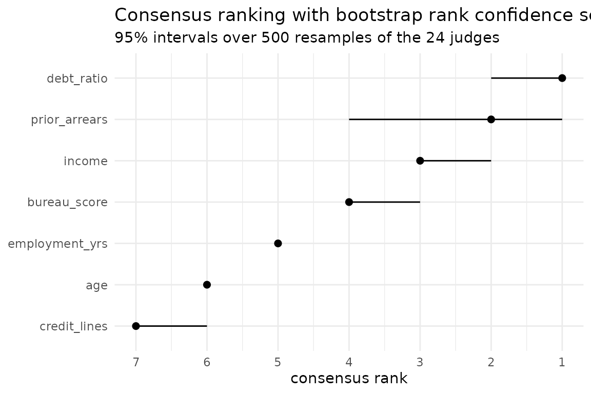

Robustly important variables in credit scoring
Source:vignettes/credit-scoring.Rmd
credit-scoring.RmdA lender must be able to say which characteristics drive a decision, and must be able to defend the claim. “Our random forest’s permutation importance ranked income first” does not survive the obvious follow-up: would a different method, or a different seed, or a different fold, have said the same?
This vignette answers that question end to end, using judges drawn along all four axes at once, which are method, seed, fold and model family. It ends up answering it wrongly, and being unable to tell that it has, which is the point.
The portfolio
applications ships with the package. Eight hundred loan
applications, seven predictors, and a default indicator that comes out
"yes" 23.0 per cent of the time. It is generated rather
than collected, so the ordering a ranking ought to recover is known
rather than argued over, and it is stored on the data frame.
library(rankimp)
truth <- sort(attr(applications, "effects"), decreasing = TRUE)
truth
#> prior_arrears debt_ratio bureau_score income employment_yrs
#> 0.90 0.78 0.62 0.45 0.22
#> credit_lines age
#> 0.00 0.00Two features of it matter here, and both were built in on purpose.
income and bureau_score come from one latent
creditworthiness and correlate at 0.84, so they stand in for each other
and the credit for the signal has to be divided somehow.
prior_arrears is the largest effect in the data and takes
only six distinct values, which is the case mean decrease in impurity
handles badly. See ?applications.
The panel
Two model families, two methods, three folds, two seeds: 24 judges.
library(randomForest)
#> randomForest 4.7-1.2
#> Type rfNews() to see new features/changes/bug fixes.
library(ranger)
#>
#> Attaching package: 'ranger'
#> The following object is masked from 'package:randomForest':
#>
#> importance
set.seed(1)
rf_fit <- randomForest(default ~ ., data = applications, ntree = 300)
set.seed(1)
rgr_fit <- ranger(default ~ ., data = applications, num.trees = 300,
importance = "impurity", probability = TRUE)
J <- importance_judges(
fit_list = list(rf = rf_fit, ranger = rgr_fit),
methods = c("permutation", "mdi"),
data = applications,
target = "default",
resamples = rsample::vfold_cv(applications, v = 3),
seeds = 1:2
)
J
#> <judges> 24 judges x 7 variables
#> models : rf, ranger
#> methods : permutation, mdi
#> seeds : 1, 2
#> resamples: Fold1, Fold2, Fold3
#> weights : none (equal)
#> recipe : kept; rank_confsets(type = "data") can rebuild this panel
#>
#> income bureau_score debt_ratio employment_yrs
#> rf:permutation:s1:Fold1 3 5 2 4
#> rf:mdi:s1:Fold1 2 3 1 4
#> rf:permutation:s1:Fold2 4 3 2 5
#> rf:mdi:s1:Fold2 2 4 1 5
#> rf:permutation:s1:Fold3 3 6 2 5
#> rf:mdi:s1:Fold3 1 2 3 5
#> rf:permutation:s2:Fold1 3 4 2 7
#> rf:mdi:s2:Fold1 2 3 1 4
#> rf:permutation:s2:Fold2 4 5 1 3
#> rf:mdi:s2:Fold2 2 3 1 5
#> prior_arrears credit_lines age
#> rf:permutation:s1:Fold1 1 6 7
#> rf:mdi:s1:Fold1 6 7 5
#> rf:permutation:s1:Fold2 1 6 7
#> rf:mdi:s1:Fold2 3 7 6
#> rf:permutation:s1:Fold3 1 4 7
#> rf:mdi:s1:Fold3 4 7 6
#> rf:permutation:s2:Fold1 1 5 6
#> rf:mdi:s2:Fold1 6 7 5
#> rf:permutation:s2:Fold2 2 7 6
#> rf:mdi:s2:Fold2 4 7 6
#> ... and 14 more judgesAny one of those 24 rows, reported alone, would look like a result.
What the panel agrees on
cr <- consensus_rank(J)
cr
#> <consensus_rank>
#> judges : 24
#> variables : 7
#> algorithm : BB (ties allowed)
#> tau_x : 0.7083
#>
#> # A tibble: 7 × 2
#> variable rank
#> <chr> <int>
#> 1 debt_ratio 1
#> 2 prior_arrears 2
#> 3 income 3
#> 4 bureau_score 4
#> 5 employment_yrs 5
#> 6 age 6
#> 7 credit_lines 7Compare that against truth above. The consensus does
not recover the ordering. It promotes
debt_ratio over prior_arrears, which is the
largest effect in the data, and it swaps income ahead of
bureau_score, which is the correlated pair being divided
the wrong way round. Two errors, both in the top four, and
tau_x of 0.72 says the judges were a long way from
unanimous while saying nothing about which way they were wrong.
It gets the bottom of the table right. employment_yrs is
fifth, where it belongs, and the two predictors that enter the outcome
nowhere come last.
What survives resampling
cb <- rank_confsets(cr, n_boot = 500)
cb
#> <rank_confsets>
#> replicates : 500 ( quick )
#> level : 0.95
#> resampled : 24 judges, with replacement
#>
#> # A tibble: 7 × 4
#> variable rank lower upper
#> <chr> <int> <int> <int>
#> 1 debt_ratio 1 1 2
#> 2 prior_arrears 2 1 4
#> 3 income 3 2 3
#> 4 bureau_score 4 3 4
#> 5 employment_yrs 5 5 5
#> 6 age 6 6 6
#> 7 credit_lines 7 6 7Read the intervals against the truth rather than against the consensus.
employment_yrs has the interval [5, 5], a
point, and it is right. credit_lines and age
share [6, 7], which is the procedure declining to order two
variables that have no order, and that is right too. So far the
uncertainty is doing what it was built to do.
The top four are the problem. debt_ratio gets
[1, 2] and prior_arrears gets
[1, 4], so resampling the judges is more confident
about the variable that is second in truth than about the one that is
first.
rank_select(cb, threshold = 2)
#> [1] "debt_ratio"That is the failure worth the whole vignette. Asked for the variables it can place in the top two, the procedure returns one, confidently, and it is not the largest effect in the data. Nothing in the output says so.
rank_select(cb, threshold = 4)
#> [1] "debt_ratio" "prior_arrears" "income" "bureau_score"Widen the question and the answer becomes defensible: these four
characteristics drive default, ahead of the other three. That statement
is true. Any statement that orders the four is not, and the interval for
prior_arrears is the only thing hinting that the ordering
is unsafe.
autoplot(cb)
Where the disagreement lives
A panel of 24 that disagrees is worth taking apart before it is averaged.
het <- judge_clusters(J)
het
#> <judge_clusters>
#> judges : 24
#> variables : 7
#> clusters : 2 (silhouette 0.47, p = 0.005 against one population)
#> start : enumerated medoids
#>
#> # A tibble: 24 × 3
#> judge cluster silhouette
#> <chr> <int> <dbl>
#> 1 ranger:permutation:s1:Fold1 1 0.581
#> 2 ranger:permutation:s1:Fold2 1 0.483
#> 3 ranger:permutation:s1:Fold3 1 0.478
#> 4 ranger:permutation:s2:Fold1 1 0.300
#> 5 ranger:permutation:s2:Fold2 1 0.447
#> 6 ranger:permutation:s2:Fold3 1 0.448
#> 7 rf:permutation:s1:Fold1 1 0.603
#> 8 rf:permutation:s1:Fold2 1 0.397
#> 9 rf:permutation:s1:Fold3 1 0.565
#> 10 rf:permutation:s2:Fold1 1 0.448
#> 11 rf:permutation:s2:Fold2 1 0.182
#> 12 rf:permutation:s2:Fold3 1 0.4
#> 13 ranger:mdi:s1:Fold1 2 0.656
#> 14 ranger:mdi:s1:Fold2 2 0.0610
#> 15 ranger:mdi:s1:Fold3 2 0.510
#> 16 ranger:mdi:s2:Fold1 2 0.656
#> 17 ranger:mdi:s2:Fold2 2 0.0610
#> 18 ranger:mdi:s2:Fold3 2 0.510
#> 19 rf:mdi:s1:Fold1 2 0.551
#> 20 rf:mdi:s1:Fold2 2 0.449
#> 21 rf:mdi:s1:Fold3 2 0.626
#> 22 rf:mdi:s2:Fold1 2 0.551
#> 23 rf:mdi:s2:Fold2 2 0.656
#> 24 rf:mdi:s2:Fold3 2 0.653
#>
#> Group consensus:
#> income bureau_score debt_ratio employment_yrs prior_arrears
#> cluster_1 3 5 2 4 1
#> cluster_2 2 3 1 5 4
#> credit_lines age
#> cluster_1 6 7
#> cluster_2 7 6Two groups, at p = 0.005 against a single population.
The useful question is which axis they fall along, and the panel records
the provenance of every judge:
provenance <- attr(J, "provenance")
table(method = provenance$method, cluster = het$cluster)
#> cluster
#> method 1 2
#> mdi 0 12
#> permutation 12 0
table(model = provenance$model, cluster = het$cluster)
#> cluster
#> model 1 2
#> ranger 6 6
#> rf 6 6The seam is the method, and it is not approximate: all twelve MDI judges in one group, all twelve permutation judges in the other, while randomForest and ranger split six and six across both. Swapping the engine changes nothing. Swapping how importance is defined changes the answer.
het$centres
#> income bureau_score debt_ratio employment_yrs prior_arrears
#> cluster_1 3 5 2 4 1
#> cluster_2 2 3 1 5 4
#> credit_lines age
#> cluster_1 6 7
#> cluster_2 7 6There is the mechanism. Permutation puts prior_arrears
first, which is where the truth puts it. Impurity puts
it fourth. prior_arrears is a count with
six distinct values and mean decrease in impurity is biased against
predictors with few places to split, so the panel has rediscovered a
known property of the estimator without being told to look for it.
Averaging the two groups is what produced the consensus above. Twelve
judges were right about prior_arrears and twelve were
wrong, and the median ranking of the 24 landed between them, on
second.
What a consensus cannot do for you
Every judge here is a tree ensemble. Averaging over methods, seeds, folds and two forest implementations measures how much the answer depends on those choices, and nothing else. A bias that all 24 judges share, because they are all built from trees, passes through the consensus untouched and comes out looking like agreement.
That is not an abstract worry in this example, it is what happened. The cardinality bias was visible only because the panel contained a method that does not share it, and it was still strong enough to move the largest effect in the data off the top of the consensus. Half the panel was enough to see the bias and not enough to correct it.
Read the intervals as what they are. They describe how much the answer moves when the judges are resampled, so they are narrow when the judges agree, and judges agree when they share an assumption as readily as when they are right. Widen the panel along the axis you are worried about, or the narrow confidence set you get back is measuring the wrong thing.